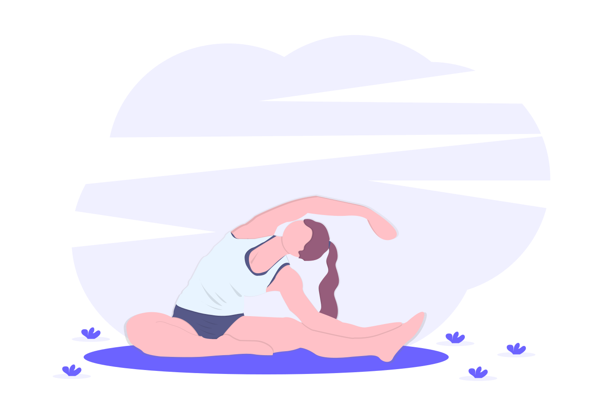

Introducción

Esta página tiene como propósito brindar información precisa y relevante acerca de planes de entrenamiento, alimentación adecuada y hábitos saludables que
permitan conseguir objetivos reales, ya sea que tu objetivo sea aumentar masa muscular, quemar calororías y por ende perder peso, o simplemente empezar a
construir hábitos saludables.
Es preciso también mencionar que, la información de esta página es recopilada de artículos científicos y escolares propios de algunas tesis, por lo que
esta información es veridica y confiable.
La información se divide en distintos apartados como: Enfoque, Rutinas, Alimentación y más. Estos apartados podrás empezar a visualizarlos debaje de esta
sección, o puedes también acceder a cada una de los apartados por medio de la barra que está en la parte superior.
Enfoque
¿como llevar una vida más saludable?
Claro está que el deporte es vital para cumplir con el cambio al que esperamos llegar, y su importancia radica en que
nos ayuda a mejorar nuestra nuestra condición física y nuestra composición corporal, además, disminuye el riesgo de enfermedades
cardiacas, ayuda a controlar el estrés, mejora el humor y nuestra función cognitiva entre muchos beneficios más.
lo importante de llevar una vida saludable es ser constante, adoptar hábitos saludables desechando los mitos de las dietas
que son extremas y que solo sirven para objetivos a corto plazo, que eventualmente desaparecerán.
En este apartado te explicamos la manera de aumentar y bajar de peso de manera eficiente y saludable.
¿Cómo aumentar masa muscular?
Está comprobado que la capacidad de las personas para aumentar la masa muscular está fuertemente relacionada a la
genética, sin embargo, un entrenamiento adecuado puede influir notablemente sobre estos factores genéticos, pues se pueden
diseñar buenos planes de entrenamiento que permitan incrementar la masa muscular basados en ejercicios intensos
(peso y sobrecargas), ejercicios de volúmen(series y repeticiones) y tiempo de descanso que es igual de importante a los
ejercicios.
A su vez, el aspecto nutricional principal para el aumento de masa muscular debe ir enfocado a un balance energético
positivo, es decir, al consumo de más kilocalorías donde estas tengan un excedente de 300 a 500 kilocalorías diarias,
suficientes para generar anabolismo muscular.
En teoría, la alimentación adecuada para el incremento de la masa muscular debe incluir un superávit energético de
unas 300 a 500 kilocalorías, y tener una proporción de hidratos de carbono, proteínas y grasas de 55-60%, 12 a 15% y
25-30% respectivamente.
¿Cómo bajar de peso-reducir grasa corporal?
Cuando una persona tiene la meta de perder grasa normalmente empieza con la idea de restringir la cantidad de
alimentos que consume, y de forma alterna realizar ejercicios para quemar calorías extras. Aunque lo ideal para cumplir
cualquier meta física que tengamos es ver a un nutriólogo, hay formas de hacerlo por nosotros mismos, y para esto se
recomienda:
- hacer ejercicio y cambiar los hábitos alimenticios en lugar de realizar dietas.
- hacer 150 minutos de ejercicio semanal.
- realizar trabajo aeróbico(cardio) como de sobrecarga(pesas).
Debajo de este apartado puedes encontrar ejercicios, rutinas y una lista de los mejores alimentos para aumentar masa
muscular y de la misma manera para bajar de peso, tonificar y reducir grada corporal.
Rutinas
Existen infinidad de ejercicios los cuales podemos realizar en un gimnasio, parque o incluso en casa.
Sin embargo, los ejercicios deben ir enfocados a lo que queremos, pues si el objetivo es aumentar la masa muscular
únicamente o bajar de peso, mi rutina debe reflejar esta meta.
Es por ello que te dejamos los siguientes ejercicios, los cuales podrás realizar de acuerdo a lo que esperas obtener:
Mejores ejercicios para aumentar masa muscular:
Ejercicios para pecho
- Press inclinado con mancuernas: proporciona una gran activación pectoral.
- Flexiones: Es de los mejores ejercicios para la activación del pectoral y además requiere únicamente
del peso corporal y es extremadamente sencillo de realizar.
- Press inclinado con barra: este es un gran ejercicio para trabajar la parte superior del pectoral.
- Aperturas en máquina: la tensión sobre el pectoral se mantiene durante todas las fases del ejercicio.
- Cruces con polea alta: hay una tensión constante durante el intervalo completo de recorrido, a su vez,
existe un bajo peligro de lesión y de super congestión.
- Press de banca con barra o mancuerna: un excelente ejercicio que no solo trabaja los pectorales, sino que
también la musculatura del hombro(deltoide anterior) y el tricep.
- Aperturas planas con mancuerna: gran ejercicio para romper fibras musculares, esto permite que el volumen del
pectoral aumente.
Ejercicios para Biceps
- Curl con barra: Es uno de los ejercicios de bíceps más tradicionales porque agranda su tamaño y aumenta
su fuerza, además de que es también un ejercicio simple de hacer.
- Curl con mancuerna: Este ejercicio de curl de bíceps también se llama curl martillo y
se basa en colocar las muñecas en una posición neutral donde se aleja el bíceps de los antebrazos.
- Curl con banda de resistencia o polea: Este ejercicio se hace de pie y con una banda elástica o en polea.
Con tus pies vas a apretar el extremo de la banda y el otro extremo se sujeta con las manos y con las palmas hacia
arriba.
- Dominadas supinas: Las dominadas son un ejercicio estupendo para trabajar tu espalda y también tus bíceps.
- Curl de biceps con banco inclinado: Para aumentar aún más el trabajo del bíceps nos sentamos en un banco
ligeramente inclinado y realizamos curl de bíceps.
- Curl martillo: nos da mayor resistencia, y es un buen ejercicio para optimizar el trabajo y la forma
de los brazos.
- Curl 21: Si lo que quieres es trabajar de forma agresiva y exigente los biceps, este es el mejor ejercicio.
Ejercicios para Triceps
- Fondos de triceps: Es uno de los ejercicios de bíceps más tradicionales porque agranda su tamaño y aumenta
su fuerza, además de que es también un ejercicio simple de hacer.
- Extensión de codos sentado: Este ejercicio de curl de bíceps también se llama curl martillo y
se basa en colocar las muñecas en una posición neutral donde se aleja el bíceps de los antebrazos.
- Tríceps en polea superior con barra o cuerda: Este ejercicio se hace de pie y con una banda elástica o en polea.
Con tus pies vas a apretar el extremo de la banda y el otro extremo se sujeta con las manos y con las palmas hacia
arriba.
- Press francés: Las dominadas son un ejercicio estupendo para trabajar tu espalda y también tus bíceps.
- Flexiones con manos juntas: Para aumentar aún más el trabajo del bíceps nos sentamos en un banco
ligeramente inclinado y realizamos curl de bíceps.
- Extensiones con mancuerna: nos da mayor resistencia, y es un buen ejercicio para optimizar el trabajo y la forma
de los brazos.
Ejercicios para Espalda
- Peso muerto: este es un ejercicio básico en el que se trabaja toda la musculatura de la espalda, tanto la
parte superior como la inferior.
- Dominadas: este ejercicio tiene un efecto similar al peso muerto en el que también se trabaja toda la
espalda.
- Remo con barra con banco inclinado: este ejercicio se enfoca en trabajar mayormente la parte superior de la
espalda, además, se encarga de brindar una mayor activación a esta parte del músculo lo que ayuda a desarrollarse de
mejor manera.
- Jalones de pecho: es un ejercicio ideal para desarrollar el dorsal ancho de la espalda, asimismo su trabajo
implica a otros músculos como el deltoides posterior, los romboides y el trapecio.
- Remo con mancuernas: con este ejercicio se trabajan ambos lados de la musculatura de la espalda de manera
individual.
- Pull over con polea alta: con este ejercicio se logra trabajar el redondo mayor y el dorsal ancho, además
con este ejercicio también se ejercita de buena manera el tríceps.
- Remo con T: con este ejercicio se busca trabajar casi toda la espalda en un solo movimiento.
Ejercicios para Abdomen
- Plancha:es de los mejores ejercicios para definir el abdomen, además también de que nos brinda
resistencia.
- Plancha lateral: este ejercicio sirve mayormente para trabajar los oblicuos.
- Rueda abdominal: este ejercicio no solo sirve para trabajar el abdomen sino también para generar
una mayor activación en el crecimiento de este.
- Tabla lateral con levantamiento de piernas: con este ejercicio se trabajan los abdominales, glúteos,
lumbares y abductores.
Ejercicios para Pierna
- Prensa de pierna: Este es uno de los mejores ejercicios para conseguir la hipertrofia del tren inferior,
aporta fuerza pero además es de los ejercicios que más ayuda al crecimiento de los músculos implicados.
- Extensión de cuádriceps: Es sin duda uno de los principales ejercicios para trabajar los cuadriceps,
además, es un ejercicio muy sencillo de realizar y otorga un mayor volumen al músculo con respecto a otros ejercicios
debido a la exigencia de este ejercicio.
- Curl femoral: El enfoque de este ejercicio se basa en trabajar y fortalecer la flexibilidad de los
isquiotibiales, aunque también trabaja otros músculos del tren inferior.
- Sentadillas: De los ejercicios más básicos pero también más importantes para ejercitar el tren inferior,
pues no solo nos da más volumen y tonificación sino también resistencia.
- Peso muerto: con este ejercicio se pierde gran cantidad de calorías, es donde más músculos se trabajan del
tren inferior y fortalece el agarre.
- Sentadilla con barra: Además de trabajar los cuadricepts e isquiotibiales, este ejercicio trabaja la espalda,
tanto dorsales como lumbares.
Mejores ejercicios para Perder calorías y tonificar:
- Burpees:son un magnífico ejercicio tanto para la ganancia de fuerza como para perder grasa.
- Saltos al cajón:si lo realizamos este ejercicio a una velocidad lo suficientemente intensa y elevada,
vamos a conseguir un efecto similar al de los burpees.
- Flexiones:Su músculo objetivo principal es el pectoral, pero en función de la abertura de brazos que
utilicemos y de las posiciones, podremos solicitar en mayor o menor medida el trabajo de otros músculos como, por
ejemplo, los tríceps.
- Batidas de cuerda:este ejercicio sirve para ganar fuerza, pero además nos brinda un mejoramiento notorio
en nuestra condición física por su intensidad, y por esta última es que aumenta la quema de grasas en nuestro cuerpo.
- Montain climbers:Un trabajo muscular completo, de pectorales, hombros, abdominales que mejora de la capacidad
pulmonar y resistencia cardiovascular, mejora la coordinación y representa un gran gasto calórico.
Sino sabes cómo combinar estos ejercicios ¡No te preocupes!, porque aquí hay algunas rutinas que puedas implementar en tu plan de entrenamiento junto
a otros ejercicios:
Ver Rutinas para aumentar masa muscular
Continua hacia abajo para saber más sobre la alimentación, en donde encontraras los mejores alimentos para aumentar la masa muscular, y los mejores
alimentos para bajar de peso de manera saludable.
Alimentación

El ejercicio es una parte muy importante para poder conseguir nuestros objetivos, sin embargo, la alimentación es según muchos expertos la parte más
fundamental para poder conseguir los objetivos físicos que esperamos conseguir, y para ello te dejamos una lista de los mejores alimentos para aumentar
masa muscular:
Proteínas:
- Huevos
- pavo y pollo
- Pescado
- Carnes rojas
- plátano: Gran fuente de proteína e hidratos de carbono. Es uno de los alimentos más ricos en potasio y además, aporta magnesio y calcio.
- crema de maní
Grasas saludables como:
- cacahuates: Los frutos secos con mayor contenido en proteínas son los cacahuetes, las nueces y las almendras.
- almendras
- Aguacate
- Aceite de oliva
Vitaminas como:
- Cítricos, ya que su vitamina C es necesaria para fabricar colágeno, que está presente en las fibras musculares y
las mantiene elásticas.
Carbohidratos como:
- Cereal
- pan
- pasta y arroz
- frijoles
- lentejas…
Ahora ya conoces cuáles son los alimentos que según la mayoría de estudios están mayormente relacionados con el incremento de la masa muscular.
Ahora bien, si tu objetivo por el contrario es quemar calorías y bajar de peso de manera saludable, estos son los alimentos más recomendados:
- Té verde: es un excelente antioxidante y una de las mejores infusiones quemagrasa.
- yogurt: ayuda al organismo a metabolizar mejor la grasa y reduce la creación de nuevos depósitos de grasa.
- Aceite de oliva: es una grasa buenas que facilita que el cuerpo elimine la grasa blanca y la sustituya por grasa parda.
- Lentejas: el hierro que contienen facilita la combustión de la grasa al igual que otras vitaminas que transforman
esa grasa en energía.
- Manzana: es baja en sodio, calorías y grasa; a la vez que aporta fibra, vitaminas, minerales, antioxidantes y otros
nutrientes que ayudan a bajar de peso de forma saludable.
- Limón: fruta con efecto diurético y quemagrasa.
- Aceite de coco: aumenta el metabolismo, lo que como consecuencia nos hace quemar energía más rápido.
- Canela: estimula la digestión, desinflama el abdomen y reduce los niveles de colesterol.
- Tomate: es una fuente de minerales, fibra y vitaminas. Además, es un excelente desintoxicante, depurador y
quemagrasas natural del cuerpo.
- Semillas de chia
- Brócoli
- Apio
- Toronja
- Licuados verdes
Por otro lado tienes la posibilidad de probar otras alternativas como el Vinagre de sidra de manzana orgánico, que posee numerosas propiedades
médicas, tales como:
- Mantiene estable los niveles de azúcar en la sangre
- Reduce el colesterol
- desintoxica el hígado
- mejora la circulación
- mejora el metabolismo
- Ayuda a perder de peso
- Posee propiedades antibacterianas, lo cual además lo convierte en un gran aliado para combatir el acné.
Quizás estés dispuesto a invertir entrenadores personales y en planes alimenticios propicios para ti, pero si quieres que
esta inversión sea mínima te recomendamos los siguientes planes de entrenamiento, que por opinión de la gente son
clasificados como los mejores por un costo bajo:
Plan de entrenamiento para aumentar masa muscular
Plan de entrenamiento para bajar de peso